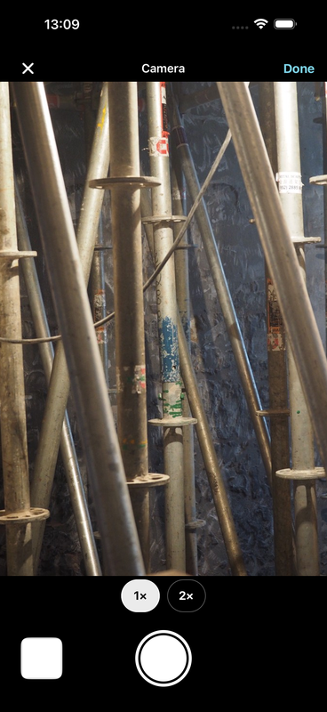
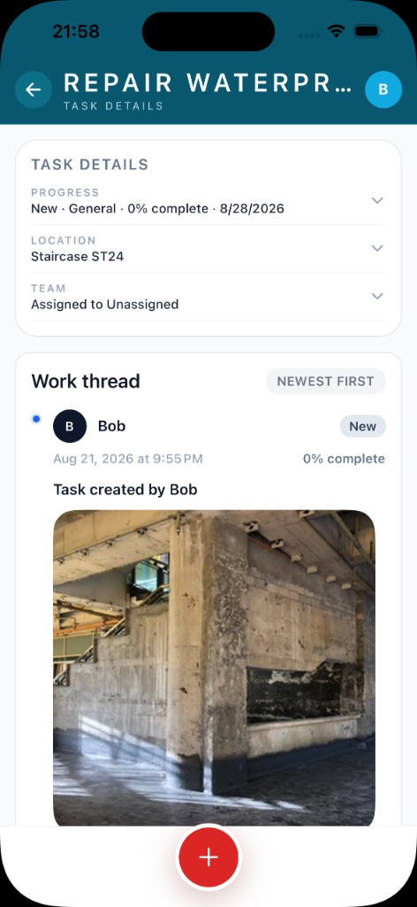
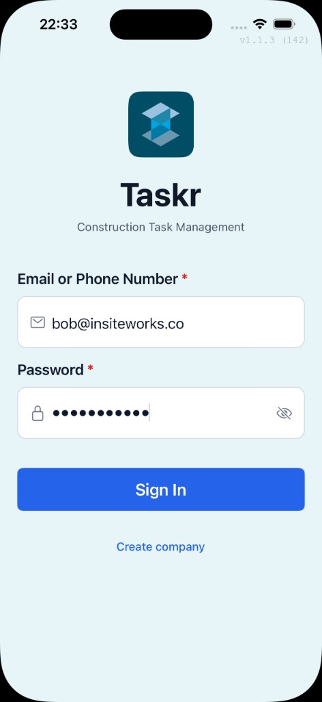
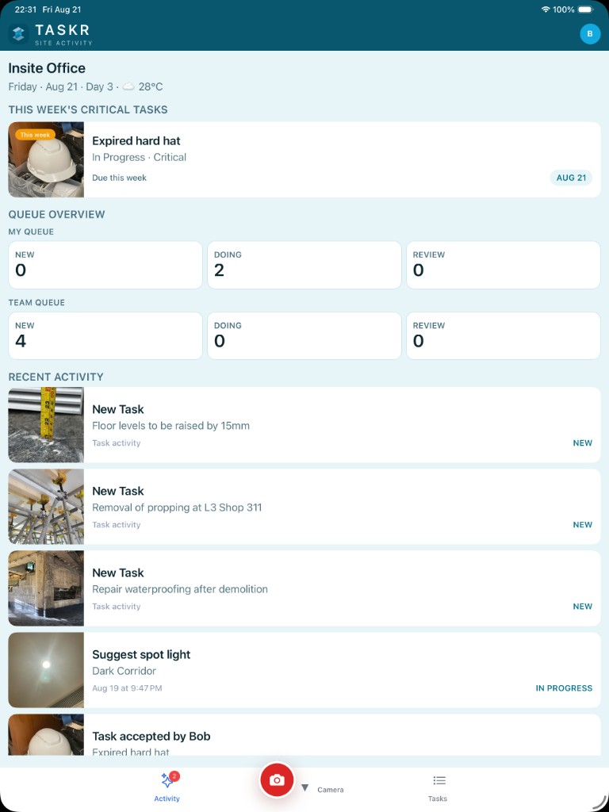

Company admin
Creates company, invites seats, owns access.
CONSTRUCTION FIELD APP BY INSITE WORKS
Turn site photos into assigned, reviewable tasks. Crews update with evidence; PMs approve or send back—keeping handoffs clear and cost conversations grounded in what happened on site.
Your company controls access: admins invite seats, projects stay scoped, and there is no public join-any-company path.
One project spine — company admin · PM/supervisor · crew/trade. Photo-centric capture, review, and approve.
Creates company, invites seats, owns access.
Assigns work, reviews proof, keeps handoffs moving.
Captures photos, updates progress, closes assigned work.
Five stations on one project bay — photo-centric from capture to approve. Traceable accountability for admin, PM, and crew.
Admin opens Taskr and creates the company account.
Secure sign-in link. They set their own password.
Everyone works inside the right jobsite — not mixed projects.
Photos become assigned, reviewable tasks for the right trade.
Approve or send back with a clear reason and photo trail.
Keep time-critical work visible. Turn site photos into assigned action. Review the proof before you approve. Keep every handoff traceable.
Critical this week stays on the project — fire-stop, HVAC make-good, and punch items don’t vanish into chat.
Snap the condition, title it clearly, assign the right trade, and send without leaving the field.

Work thread shows who did what, when, and with which photos — every handoff stays traceable.

Assigned → Work Completed → Verified → Approved → Close → Improve Cash Cycle

Company-first access. No public join-any-company path. Admins invite seats; projects stay scoped.

Billed to the company. 30-day trial with a card on file. Cancel anytime during trial. Caps protect cost — no unlimited tier.
GROWTH
$19.99
per company / month
SITE OPS
$99.99
per company / month · high volume
Add-ons
Scale seats
Add-ons stack inside Site Ops caps. No unlimited seats or projects on this release.
Install Taskr, create your company (or open your invite), then run the photo → assign → review loop on the job.
Open Taskr on the App Store to start your company trial.